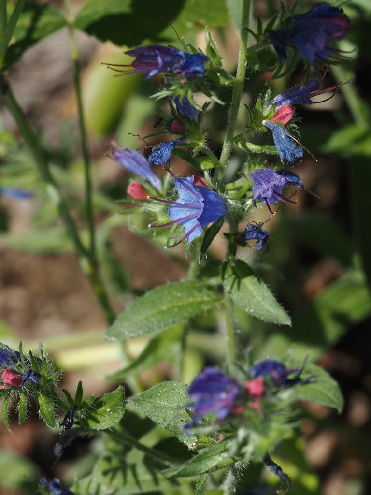
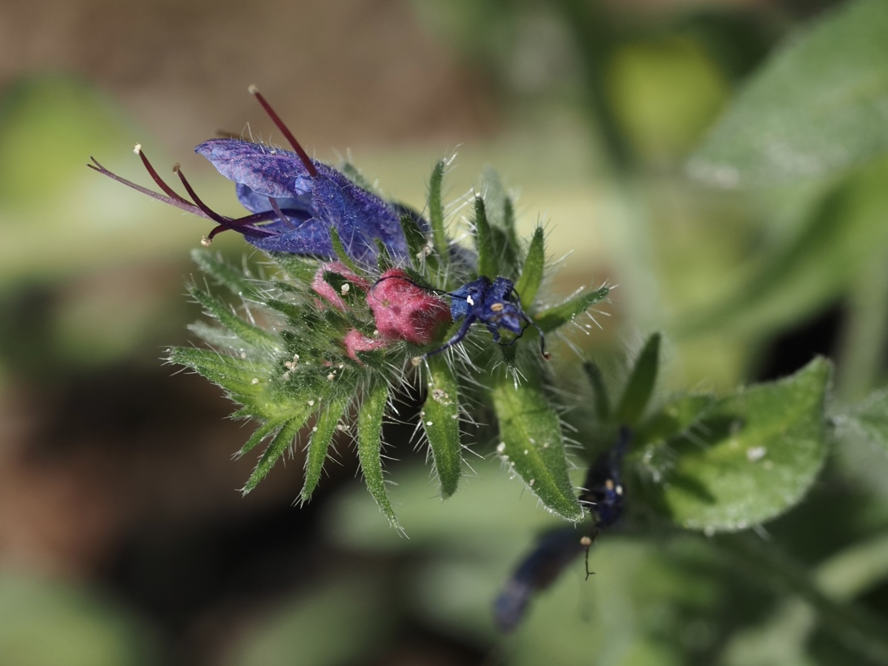

Die Pflanze, die ihre Farbe wechselt
Knospen und gerade aufgeblühte Blüten des Natternkopfs sind rosa-rötlich. Doch im Verlauf eines einzigen Tages verändert sich der Blütenfarbstoff – und die Blüte wird leuchtend blau. Das ist kein Zufall: Bestäuber lernen schnell, dass nur die blauen Blüten noch Nektar führen, während die rosa Knospen leer sind. Die Pflanze leitet ihre Besucher gezielt zu den lohnenden Blüten – und spart sich Energie.
Schlangenkopf und Apothekersignatur
Der deutsche Name kommt vom heraushängenden, gespaltenen Griffel, der wie eine züngelnde Schlangenzunge wirkt. Im Mittelalter glaubte man nach der Signaturenlehre, dass Pflanzen mit schlangenähnlichen Merkmalen gegen Schlangenbisse helfen würden – der Natternkopf war eines der prominentesten Beispiele. Heute weiß man: Er enthält tatsächlich pharmakologisch wirksame Alkaloide, allerdings sind diese leicht lebertoxisch.